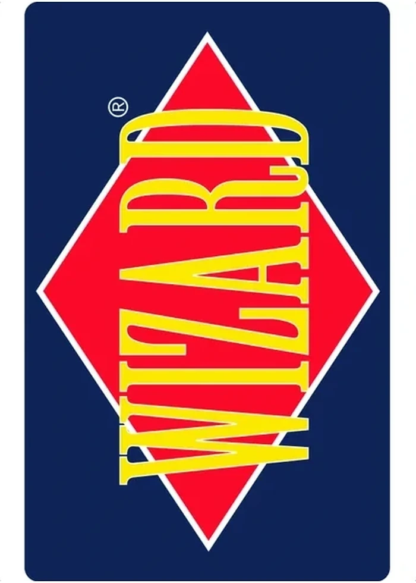
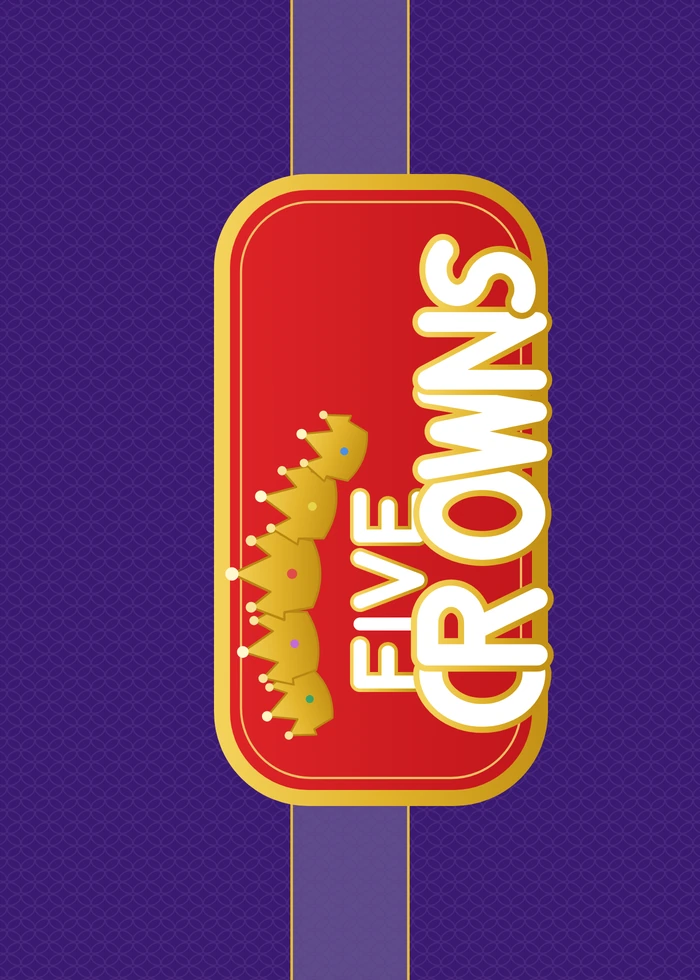

<!doctype html>
<html lang="en">
<meta charset="utf-8">
<meta name="viewport" content="width=device-width, initial-scale=1">
<title>Wizard and Five Crowns title options</title>
<style>
  * { box-sizing: border-box; }
  body { margin: 0; background: #173e38; color: #2a2118; font: 16px system-ui, sans-serif; }
  main { max-width: 950px; margin: auto; padding: 28px; }
  h1 { color: #fbf6ec; font: 700 28px Georgia, serif; }
  .options { display: grid; grid-template-columns: repeat(2, minmax(0, 1fr)); gap: 16px; }
  section { padding: 20px; border-radius: 16px; background: #fbf6ec; }
  h2 { margin-top: 0; font: 700 22px Georgia, serif; }
  .shelf { display: grid; grid-template-columns: repeat(2, minmax(0, 1fr)); gap: 10px; }
  figure { margin: 0; overflow: hidden; border: 1px solid #d9c7b0; border-radius: 10px; background: #fffaf2; }
  img { display: block; width: 100%; aspect-ratio: 5/7; object-fit: cover; }
  figcaption { padding: 8px; color: #173e38; text-align: center; font-weight: 800; }
  .title-band figcaption { border-bottom: 1px solid #d9c7b0; background: #e5f3ef; font: 700 17px Georgia, serif; }
  .night { display: flex; align-items: center; gap: 8px; margin-top: 12px; }
  .night img { width: 28px; border-radius: 3px; }
  @media (max-width: 620px) { .options { grid-template-columns: 1fr; } }
</style>
<main>
  <h1>Wizard and Five Crowns</h1>
  <div class="options">
    <section>
      <h2>Current titles</h2>
      <div class="shelf">
        <figure><figcaption>Wizard</figcaption></figure>
        <figure><figcaption>Five Crowns</figcaption></figure>
      </div>
      <div class="night">Wizard · Past nights</div>
    </section>
    <section class="title-band">
      <h2>Horizontal title band</h2>
      <div class="shelf">
        <figure><figcaption>Wizard</figcaption></figure>
        <figure><figcaption>Five Crowns</figcaption></figure>
      </div>
      <div class="night"><strong>Wizard</strong> · Past nights</div>
    </section>
  </div>
</main>
</html>
